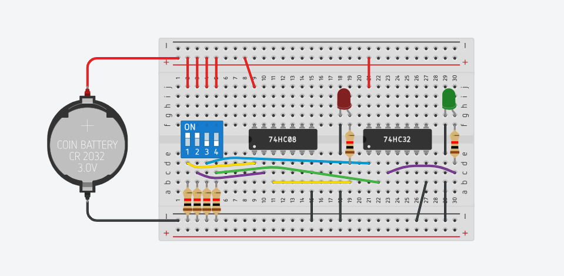

Simulación de Puertas Lógicas AND - OR
Objetivos
Comprender el funcionamiento físico y lógico de las compuertas AND (74HC08) y OR(74HC32) mediante una simulación controlada.
Materiales Utilizados
- Protoboard: Placa de pruebas técnica.
- Circuito Integrado 74HC08: Compuerta lógica AND.
- Circuito Integrado 74HC32: Compuerta lógica OR.
- DIP Switch:Interruptor de múltiples posiciones que permite configurar los estados lógicos "alto" (1) o "bajo" (0) en las entradas.
- LEDs:Diodo emisor de luz que actúa como indicador visual; se ilumina cuando la salida del circuito es un "1" lógico.
- Resistencias:Componentes que limitan el flujo de corriente para proteger el LED (usualmente de 220\Omega o 330\Omeg) y actúan como pull-down en los interruptores.
Implementación

Conclusiones
Tras la implementación física y el análisis de señales en el entorno de simulación, se establecen las siguientes conclusiones técnicas:
- Diferenciación Lógica Funcional: Se validó experimentalmente la diferencia entre ambos operadores: mientras la compuerta OR (74HC32) actúa bajo una lógica inclusiva (suma), donde la salida se activa si al menos una entrada es 1; la compuerta AND (74HC08) opera bajo una lógica restrictiva (producto), donde la salida es 1 únicamente si todas las entradas son simultáneas.
- Estabilidad Eléctrica mediante Pull-Down: Se demostró que el uso de resistencias de $10k\Omega$ en configuración pull-down es indispensable. Estas aseguran que, en ausencia de señal (switch abierto), la entrada se mantenga drenada a tierra ($0V$), eliminando el "ruido flotante" que podría causar activaciones erráticas en circuitos integrados de alta velocidad como la serie 74HC.
-
Validación de la Expresión Booleana:
Los resultados obtenidos coinciden al 100% con los modelos matemáticos:
- AND: $Y = A \cdot B$ (Condición restrictiva).
- OR: $Y = A + B$ (Condición alternativa).
- Eficiencia de la Serie 74HC: Se observó que los componentes de la familia CMOS (High-speed CMOS) ofrecen una respuesta inmediata y niveles de voltaje de salida definidos, facilitando la conexión en cascada para formar funciones lógicas más complejas en futuros proyectos.
Ver Simulacion
🚀 Abrir Proyecto en TinkercadEstado de la prueba: ✓ Funcional